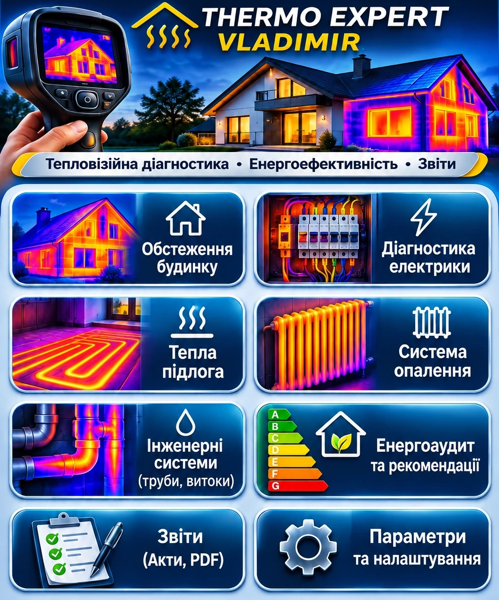

THERMO EXPERT VLADIMIR
1.2.1Тепловізійна діагностика · Енергоефективність · Звіти
Швидкий початок
Створи клієнта, додай замовлення, зафіксуй результати обстеження та сформуй PDF-звіт.
Робочий кабінет
Збереження даних
Дані зберігаються у внутрішньому сховищі програми. Автоматична копія створюється раз на день під час користування програмою. Експортуйте копії для захисту від видалення програми.
Клієнти
Новий клієнт
База клієнтів
База клієнтів
Картка клієнта
Історія обстежень
Редагування клієнта
Замовлення та розрахунок
До сплати: 1500 грн
Історія замовлень
Тепловізійне обстеження
Приклади опису дефектів
500 шаблонів. Вибирайте лише підтверджені спостереження та доповнюйте фактичними вимірюваннями.
Довідник рекомендацій
500 шаблонів. Уточнюйте за результатами вимірювань. Електричні роботи — кваліфікованим спеціалістом після знеструмлення.
Результати поточного обстеження
Підсумковий висновок експерта
Перегляд оформленого висновку
Прайс-лист
Редагуй ціни відповідно до власного прайсу. Початкові суми демонстраційні.
Архів обстежень
Збережені PDF
Зразки бланків та актів
Сформувати акт обстеження
Виберіть зразок документа
Зразок документа
Параметри
Резервні копії
Каталог
Про програму
THERMO EXPERT VLADIMIR
Professional Expert 1.2.1
Тепловізійні обстеження, облік клієнтів і замовлень, формування звітів та енергоаудит.